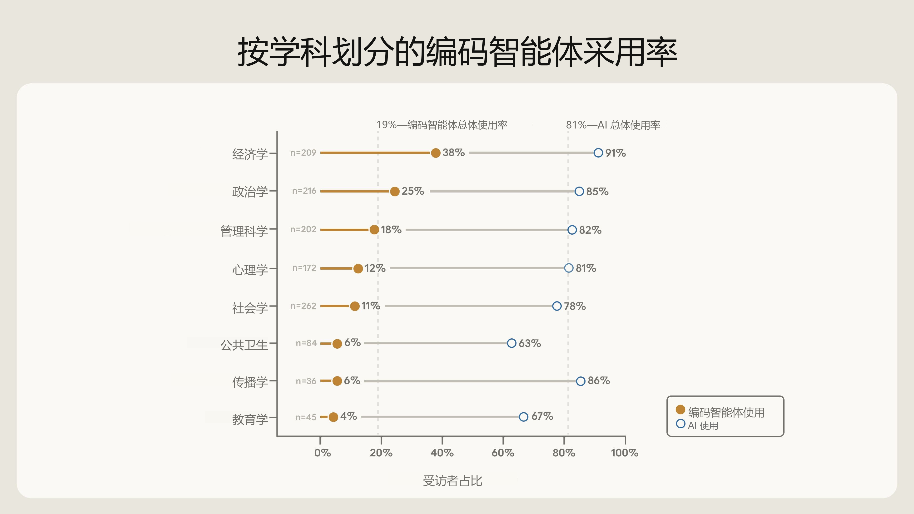
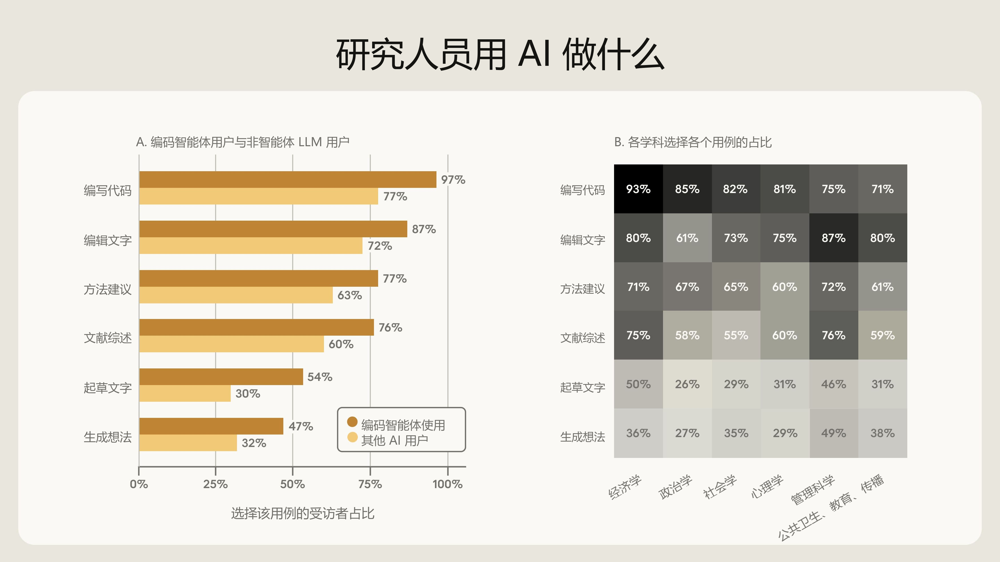
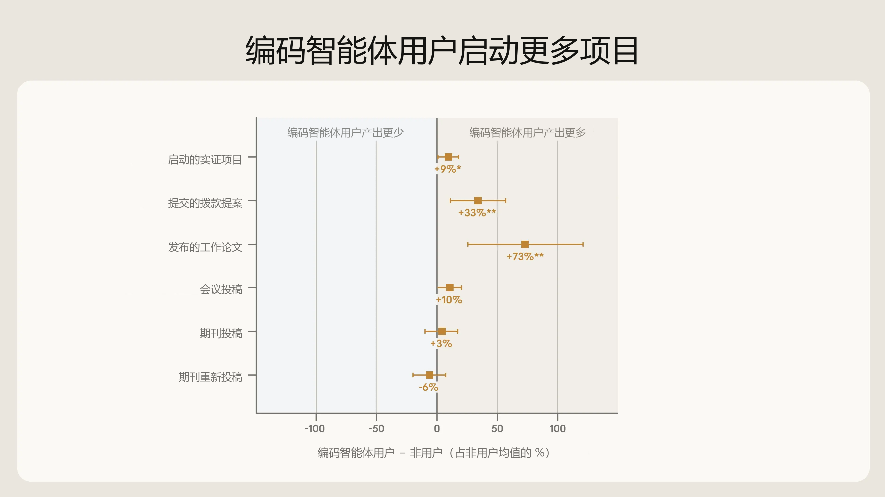

社会科学中的编程代理
📖 中文摘要
专业术语注解
编程代理（coding agent）：能自主编写、运行和迭代分析代码的AI工具，如Claude Code大语言模型（LLM）：通过海量文本训练、能生成和理解自然语言文本的AI模型因果推断（causal inference）：从数据中判断一个因素是否真的导致另一个结果的方法基准线调查（baseline survey）：追踪研究开始时收集的第一波数据，用于对比后续变化工作论文（working paper）：未经同行评审、先公开供讨论的研究初稿📄 中文全文
- 类别： 经济研究（Economic Research）
- 来源： https://www.anthropic.com/research/coding-agents-social-sciences
经济研究（Economic Research） 2026 年 5 月 27 日
摘要
- 我们展示了一项对 1,260 名社会科学家关于 AI 和编码智能体使用的调查结果，该调查于 2026 年 2 月和 3 月进行。
- 绝大多数受访者（81%）尝试过在研究中使用 AI 聊天机器人，特别是用于编写代码和编辑文字。但只有 20% 的人将编码智能体——如 Claude Code 这样能自主编写和执行分析代码的工具——纳入他们的工作。
- 编码智能体的使用存在明显差距。名字通常为男性的研究人员使用编码智能体的人数是名字为女性的研究人员的两倍。顶尖大学的研究人员使用编码智能体的可能性比其他人高 40%。
- 编码智能体的用户比同一学科和职业阶段的其他人发布更多工作论文和拨款提案，但这可能反映早期采用者之间预先存在的差异。
- 研究人员对 AI 帮助撰写可发表论文比对 AI 对社会科学整体的影响更乐观。
AI 编码智能体如何改变我们研究经济和社会的方式？
人文社会科学正在转变：核心研究任务第一次可以交给机器。AI 聊天机器人对科学研究的贡献越来越大，包括在最具声望的出版物和社会科学中。这激发了人们的乐观情绪，认为 AI 可以提高研究生产力——同时也引发了对同行评审超载和学术 AI 垃圾泛滥的担忧。 但是，虽然轮流对话式 AI 聊天机器人主要用于写作辅助，编码智能体却可能更彻底地重构社会科学研究。像 Claude Code 和 Codex 这样的智能体编码平台可以接受一个研究想法和一份数据集，编写并运行分析、解释输出并自主迭代。实证研究中那些不可化约地属于人类的步骤，第一次可以自动化。在极端情况下，研究人员已经构建了多智能体管线来自动化计算机科学研究并自主执行社会科学研究想法。 这些工具可以加速科学并使其更大胆：快速的研究执行应该意味着廉价而丰富的发现。它们也可能放大研究资源的不平等，加剧学术记录的拥堵。更深远地说，随着 AI 处理越来越多的研究任务，其独特的分析选择可能在我们对经济、社会和自身的集体理解上打上印记。 在这篇文章中，我们基于 2026 年初对 1,260 名定量社会科学家的调查提供初步观察。该调查是一项更大的、关于编码智能体如何影响研究生产力的持续研究（包括一项向研究人员提供 Claude Code 访问权限的随机实验）的基线波次。我们将于未来发布该实验的结果。现在，我们报告基线调查揭示了谁在使用这些工具、用于什么目的；用户与非用户之间的产出有何不同；以及研究人员对日益增长的采用可能带来的影响有何预期。
一项关于定量社会科学家 AI 编码智能体使用的新调查
我们在 2026 年 2 月底和 3 月进行了这项调查，目标人群是活跃的定量社会科学家。这不是一个有代表性的样本——受访者是为一项提供 Claude Max 账户访问权限的研究而招募的，因此样本选择可能偏向对 AI 工具好奇的研究人员。然而，受访者与早先收到更通用邀请的样本相当相似（见附录中的表 A2）。 受访者在经济学、政治学和社会学之间大致平均分布，各约占样本的五分之一，管理科学和心理学紧随其后（见表 A1）。我们还收到少量公共卫生、教育和传播学研究者的回复。约 40% 是正教授或副教授，25% 是助理教授，约 30% 是博士生。
编码智能体尚未触及大多数社会科学家
我们通过两种方式衡量总体 AI 使用情况。首先，我们问"您以前是否使用过生成式 AI 模型来辅助您的研究过程？"81% 的受访者回答是。 但那些真正将能力越来越强的编码智能体纳入工作流程的人呢？在这里，我们问"您是否定期（每周超过一次）使用集成在命令行中的 AI 编码助手（如 Codex、Cursor 或 Claude Code）？"在后续问题中，我们确认他们使用了这些工具之一（或 Google Antigravity）。1 只有 20% 的受访者使用编码智能体。我们的调查是在 2025 年 12 月底开始的关于 Claude Code 和 Opus 4.6 的一轮热议之后大约两个月进行的。然而，即使在自我选择进入我们调查的感兴趣的受访者中，也只有五分之一的人将智能体纳入工作流程。Claude Code 是报告中最常见的编码智能体工具，86% 的用户报告使用 Claude Code（31% 报告使用 Codex，这是第二常见的工具）。

图 1：经济学家和政治学家报告的编码智能体使用最多。 编码智能体使用指对"您是否定期（每周超过一次）使用集成在命令行中的 AI 编码助手（如 Codex、Cursor 或 Claude Code）？"回答是，以及确认使用其中一种工具或 Google Antigravity 的后续问题。学科类别见附录。采用非常不均衡
图 1 显示总体采用率存在很大差异，从经济学家的 39% 和政治学家的 25% 到公共卫生（6%）、教育（4%）和传播学（6%）的个位数。这种梯度大致对应各领域总体 AI 使用的差异，但编码智能体采用的差异平均而言更陡峭。
略超过四分之一的博士生和博士后每周至少使用一次编码智能体；在终身教授中，这一比例下降了一半以上。采用编码智能体的研究人员是年轻人——更精通技术、更可能直接处理代码和数据，并面临更强的职业压力来产出研究。
 图 2：早期职业研究者的采用率最高。蓝色序列显示按职业阶段划分的报告使用 AI 辅助研究的百分比。下面的橙色序列显示报告定期使用编码智能体进行研究的百分比。
采用差异超出了学科和职业阶段。我们按性别对研究者姓名进行分类，发现名字通常为男性的受访者采用编码智能体的比率是名字通常为女性的受访者的两倍以上。高地位和私立大学的使用也明显更高。所有这些差异在 p<0.05 水平上显著。这些差异比总体 AI 使用的差异更明显，表明至少在编码智能体采用的早期阶段，不平等程度更高。
编码智能体使用的性别差距不仅仅反映尝试 AI 的比率差距。在尝试过将 AI 用于研究的受访者中，定期使用编码智能体的性别差距甚至比总体样本略大。在相同学科和职业阶段内跨性别比较时，这些差异也依然存在。
图 2：早期职业研究者的采用率最高。蓝色序列显示按职业阶段划分的报告使用 AI 辅助研究的百分比。下面的橙色序列显示报告定期使用编码智能体进行研究的百分比。
采用差异超出了学科和职业阶段。我们按性别对研究者姓名进行分类，发现名字通常为男性的受访者采用编码智能体的比率是名字通常为女性的受访者的两倍以上。高地位和私立大学的使用也明显更高。所有这些差异在 p<0.05 水平上显著。这些差异比总体 AI 使用的差异更明显，表明至少在编码智能体采用的早期阶段，不平等程度更高。
编码智能体使用的性别差距不仅仅反映尝试 AI 的比率差距。在尝试过将 AI 用于研究的受访者中，定期使用编码智能体的性别差距甚至比总体样本略大。在相同学科和职业阶段内跨性别比较时，这些差异也依然存在。
 图 3：编码智能体的采用显示出明显的差距。 按职业阶段、性别和大学属性划分的使用 AI（左图）和编码智能体（右图）的研究人员百分比差异。男性和女性类别通过姓名分类测量。前 25 名大学基于 Nature Index 领先机构定义。各组之间采用的所有差异在 p < 0.05 下均具有统计显著性。
图 3：编码智能体的采用显示出明显的差距。 按职业阶段、性别和大学属性划分的使用 AI（左图）和编码智能体（右图）的研究人员百分比差异。男性和女性类别通过姓名分类测量。前 25 名大学基于 Nature Index 领先机构定义。各组之间采用的所有差异在 p < 0.05 下均具有统计显著性。
研究人员主要用 AI 来编码和编辑，而不是写作
在使用 AI 的研究人员中（无论通过编码智能体还是聊天机器人），他们实际上用它做什么？关于学术研究中 AI 的争论主要集中在写作上：幻觉文献综述、公式化引言中遍布的"不是 X，而是 Y"、以及全自动论文写作的可能性。 但图 4 显示，对于编码智能体用户和其他用户来说，最常见的用途都是编写定量数据分析代码：97% 的编码智能体用户和 77% 的其他 AI 用户报告使用它生成代码。其次是编辑文字，然后是征求方法建议和先前研究背景。汇总编码智能体用户和其他用户，所有 AI 用户中只有三分之一曾用它起草文字。这些模式在各学科中大致一致，只有经济学家和管理研究者常用 AI 起草文字。

图 4：最常见的用例是编码和编辑。 左图显示指出每个特定用例的用户份额，按他们是为研究使用编码智能体还是仅使用生成式 AI 拆分。受访者可以指出多个类别（问题限于研究用例）。右图显示按学科拆分的相同回答。编码智能体用户发布更多工作论文、发出更多拨款提案，但没有向期刊提交更多论文
编码智能体是否让研究人员更有效率？这是推动本调查所启动的更广泛研究的问题。我们正在就此问题进行的实验仍在进行中。但基线调查让我们能够在研究过程的许多检查点上比较编码智能体用户和其他人。这种比较纯粹是描述性的：我们比较选择使用编码智能体的研究人员与不使用的研究人员，并预期两组在许多我们无法调整的方面存在差异。差异不应被解释为因果关系，而应被视为使用编码智能体的研究人员与不使用的研究人员之间的初步比较。

图 5：定期 AI 编码智能体用户与其他研究人员之间研究产出的生产力差异。结果由受访者自我报告。发布的工作论文、期刊投稿和期刊重新投稿是互斥的类别。模型见附录。须线显示使用按结果均值缩放的稳健标准误计算的 95% 置信区间。 p < 0.05，* p < 0.01。 图 5 显示调查前六个月内在研究过程不同阶段（从启动的项目到提交的论文）的自我报告产出。调整后的估计比较编码智能体用户与其他人的差异，控制了职业阶段、学科和完成调查的周次。编码智能体用户启动更多项目、发布更多工作论文、提交更多拨款，并且可能发出更多会议投稿。 那么编码智能体用户是否写了更多论文？首先，考虑编码智能体用户与其他人在早期管线产出上的差异。编码智能体用户启动项目的速度比非智能体用户多约四分之一篇论文，发布的工作论文多约一半。按百分比计算，编码智能体用户在其学科和职业阶段的其他人看来生产率高约 10%（启动的实证项目）到 75%（发布的工作论文）。 然而，这种生产力差异只出现在这些早期管线指标上。我们没有发现编码智能体用户向期刊提交更多新论文或更快重新投稿的证据。这可能反映了论文达到投稿状态的时间线，因为编码智能体使用是最近的现象。但也可能反映编码智能体在启动和运行项目方面比在完善论文以供期刊投稿的最后一英里方面更有用。研究人员期望 AI 工具提高生产力，但对它们会整体改善社会科学信心较低
我们还询问研究人员对 AI 工具的期望。AI 是否让社会科学家在撰写可发表论文方面更有效率？他们认为 AI 会让社会科学变得更好还是更糟？
研究人员对 AI 提高论文写作生产力持乐观态度。在 1 到 10 的量表上，88% 的受访者高于 5，一半在 8 或以上。图 6 显示这些评分与 AI 使用密切相关。图的左侧显示，为更多类型任务使用 AI 的研究人员更乐观。右侧显示编码智能体用户比其他人更乐观。
 图 6：研究人员对 AI 将如何狭义地影响生产力的信念与对 AI 将如何影响整个研究领域的信念的比较。 信念在 10 点滑块量表上测量。生产力是："就撰写可发表论文而言，您认为 AI 让社会科学家更不效率还是更有效率"，滑块标记为"更不效率到更有效率"。领域影响是："您认为 AI 会让社会科学变得更糟还是更好"，滑块标记为"更糟到更好"。采用的 AI 用例数量汇总图 4 中列出的类别。
调查对象是有关趣尝试这些工具的人，因此看到一些对生产力的乐观情绪不应令人惊讶。但即使在这些乐观者中，关于 AI 狭义地帮助可发表论文与广泛影响社会科学之间也存在真正的差距。70% 的受访者对论文生产力的乐观程度高于对更广泛领域影响的乐观程度。很少有研究人员对领域影响比论文生产力更乐观，而许多人对领域影响更悲观。
图 6：研究人员对 AI 将如何狭义地影响生产力的信念与对 AI 将如何影响整个研究领域的信念的比较。 信念在 10 点滑块量表上测量。生产力是："就撰写可发表论文而言，您认为 AI 让社会科学家更不效率还是更有效率"，滑块标记为"更不效率到更有效率"。领域影响是："您认为 AI 会让社会科学变得更糟还是更好"，滑块标记为"更糟到更好"。采用的 AI 用例数量汇总图 4 中列出的类别。
调查对象是有关趣尝试这些工具的人，因此看到一些对生产力的乐观情绪不应令人惊讶。但即使在这些乐观者中，关于 AI 狭义地帮助可发表论文与广泛影响社会科学之间也存在真正的差距。70% 的受访者对论文生产力的乐观程度高于对更广泛领域影响的乐观程度。很少有研究人员对领域影响比论文生产力更乐观，而许多人对领域影响更悲观。
讨论
正在使用编码智能体的社会科学家发布更多工作论文，申请更多拨款。相对于其学科和职业阶段的其他人，他们还启动更多项目。但截至 2026 年 3 月，他们还没有推动期刊投稿的激增。项目启动数量的增加可能是生产力提高的早期证据。也可能表明早期采用者本来就是更有效率的研究人员。 总体而言，编码智能体的早期采用偏向早期职业研究者、男性和地位较高大学的人。编码智能体使用目前在这些类别中的分布比更广泛的 LLM 使用更不均衡。我们还发现暗示性证据，即研究人员担心论文生产力上升的直接好处可能伴随着领域层面的代价。也许更多论文意味着拥堵和对注意力的竞争；也许受访者担心一些研究者会以加剧社会科学现有问题的方式使用 AI 工具，比如选择性报告和规避风险、增量式的研究。 本报告中的发现有几个注意事项。这里呈现的数据基于对定量社会科学家的电子邮件调查，这些受访者是被明确招募来参加一项关于工作流程和 AI 使用研究的。我们预计受访者比未回复者更重度使用 LLM 并且对 LLM 更乐观。我们看到的早期生产力差异应被描述性地解读。编码智能体的早期采用者可能更有生产力，并且在许多我们无法在调查中直接测量的方面与非采用者不同。最后，我们在这里只考察研究者报告的项目数量，没有报告任何关于其质量的内容。在未来的更新中，我们将展示编码智能体用户与干净对照组比较的结果，并评估编码智能体增强工作的内容（而不仅仅是数量）是否看起来不同。 尽管存在这些局限，我们表明编码智能体正在扩散到社会科学中。例如，我们研究经济和政治的方式，越来越通过部分由 AI 编码智能体做出的分析决策进行。我们计划在未来报告中提供更多关于这类自动化潜力和风险的证据。
作者
Thomas Lyttelton, Maxim Massenkoff, Nathan Wilmers
致谢
Tim Belonax, Keir Bradwell, Jake Eaton, Rebecca Hiscott, Peter McCrory, Kerry Persen, Sarah Pollack, Santi Ruiz, Heather Whitney, Jack Clark。
附录
可在此获取。
引用
@online{lyttelton2026agents,
author = {Thomas Lyttelton and Maxim Massenkoff and Nathan Wilmers},
title = {Coding Agents in the Social Sciences},
date = {2026-05-27},
year = {2026},
url = {https://www.anthropic.com/research/coding-agents-social-sciences},
}
参考文献
Alvero, A. J., Stoltz, D. S., Stuhler, O., & Taylor, M. A. (2026). Generative AI in Sociological Research: State of the Discipline. Sociological Science , 13 , 45-62. Korinek, A. (2025). AI agents for economic research (No. w34202). National Bureau of Economic Research. NBER Working Paper Series. Liang, W., Zhang, Y., Wu, Z., Lepp, H., Ji, W., Zhao, X., ... & Zou, J. (2025). Quantifying large language model usage in scientific papers. Nature Human Behaviour , 1-11. Lu, C., Lu, C., Lange, R. T., Yamada, Y., Hu, S., Foerster, J., ... & Clune, J. (2026). Towards end-to-end automation of AI research. Nature , 651(8107), 914-919. Wilmers, N., & Engzell, P. (2026). The Paper Factory. SocArXiv Preprints.
脚注
- 我们在 Claude Cowork 发布仅一个月后、OpenAI 的 Codex 应用发布之前启动了这项调查，因此我们将这个问题集中在与编码智能体交互的命令行界面工具上。这意味着我们不计算仅通过更通用的桌面应用使用 AI 智能体的研究者。
相关内容
深入了解 Claude 的数学能力
一个未发布的 Claude 研究版本在与黎曼猜想相关的问题上取得了进展。它改进了黎曼 zeta 函数满足该猜想的零点比例这一长期存在的下界，将其从 41.6% 提高到 67.2%。 阅读更多
用 Claude 发现密码学弱点
密码学算法。第一次攻击显著削弱了 HAWK——一种为未来量子计算机能够破解现有标准的世界而构建的数字签名方案。第二次攻击发现了一种攻击缩减轮数 AES（使用最广泛的对称密码）的新方法。 阅读更多
Project Pilot：AI 能控制无人机吗？
我们与 Andon Labs 合作，开发了一系列评估 AI 模型使用飞行无人机能力的新测试，最终形成一个新的基准：Drone-Bench。 阅读更多
▸ 英文原文（点击展开）
Coding agents in the social sciences
- Category: Economic Research
- Source: https://www.anthropic.com/research/coding-agents-social-sciences
Economic Research
Coding agents in the social sciences
May 27, 2026
Summary
- We present results from a survey of 1,260 social scientists about AI and coding agent use, fielded in February and March 2026.
- The vast majority of respondents (81%) have tried using AI chatbots in research, particularly for writing code and editing prose. But only 20% have adopted coding agents—tools like Claude Code that autonomously write and execute analysis code—into their work.
- There are sharp disparities in use of coding agents. Twice as many researchers with typically male names use coding agents as those with female names. Researchers at top universities are 40% more likely than others to use coding agents.
- Users of coding agents post more working papers and grant proposals than others in the same discipline and career stage, but this could reflect pre-existing differences among early adopters.
- Researchers are more optimistic about AI helping write publishable papers than about the effects of AI on the social sciences as a whole.
How are AI coding agents changing how we study the economy and society?
The human sciences are shifting: for the first time, core research tasks can be handed off to machines. AI chatbots increasingly contribute to scientific research, including in the most prestigious publications and in the social sciences. This has spurred optimism that AI could boost research productivity—while also stoking fears about overloaded peer review and a deluge of academic AI slop. But while turn-taking AI chatbots have primarily been used for writing assistance, coding agents could restructure social science research more radically. Agentic coding platforms like Claude Code and Codex can take a research idea and a dataset, write and run an analysis, interpret the output, and iterate autonomously. What had been irreducibly human steps in empirical research can, for the first time, be automated. At the extreme, researchers have built multi-agent pipelines to automate computer science research and autonomously execute social science research ideas. These tools could accelerate science and make it more daring: fast research execution should mean cheap and plentiful discovery. They could also amplify disparities in research resources and exacerbate congestion in the scholarly record. More deeply, as AI handles a broadening swath of research tasks, its distinctive analytical choices could stamp our collective understanding of our economy, our society, and ourselves. In this post, we offer a first look, drawing on a survey of 1,260 quantitative social scientists fielded in early 2026. The survey is the baseline wave of a larger ongoing study of how coding agents affect research productivity, including a randomized experiment providing researchers with access to Claude Code. We will publish results from this experiment in the future. For now, we report what the baseline survey reveals about who is using these tools and for what; how output differs between users and non-users; and what researchers expect about the implications of growing adoption.
A new survey on AI coding agent use among quantitative social scientists
We fielded the survey in late February and March 2026, targeting active quantitative social scientists. This was not a representative sample—respondents were recruited for a study that offered access to Claude Max accounts, so selection into the sample could tilt toward researchers curious about AI tools. However, the respondents were fairly similar to an earlier sample that received a more generic invitation (see Table A2 in the Appendix). Respondents were evenly split between economics, political science and sociology, each around a fifth of the sample, with management sciences and psychology close behind (see Table A1). We also received a smaller number of responses from public health, education and communications researchers. Roughly 40% were full or associate professors, 25% were assistant professors, and about 30% were doctoral students.
Coding agents haven't reached most social scientists
We measured overall AI use in two ways. First, we asked “Have you previously used genAI models to aid your research process?” 81% of respondents said yes.
But what about those who have actually adopted increasingly capable coding agents into their workflow? Here, we asked “Do you regularly (more than once a week) use an AI coding assistant integrated into your command line (such as Codex, Cursor, or Claude Code)?” In a follow-up question, we verified that they used one of those tools (or Google Antigravity).1
Only 20% of respondents use coding agents. Our survey came around two months after a flurry of discussion about Claude Code and Opus 4.6 that kicked off in late December of 2025. Yet even among interested respondents who self-selected into our survey, only ⅕ had adopted agents into their workflow. Claude Code is the most common coding agent tool reported, with 86% of users reporting Claude Code use (31% report using Codex, the next most common tool).
Figure 1: Economists and political scientists report the most use of coding agents. Coding agent use is yes to “Do you regularly (more than once a week) use an AI coding assistant integrated into your command line (such as Codex, Cursor or Claude Code)?” and a follow-up question verifying use of one of those tools, or Google Antigravity. Discipline categories described in appendix.
Adoption is highly uneven
Figure 1 shows there is large variation in the overall adoption rate, from 39% of economists and 25% of political scientists to single digits for public health (6%), education (4%) and communication (6%). This gradient roughly tracks differences across fields in overall AI use, but differences in coding agent adoption are steeper on average.
Just over a quarter of doctoral students and postdocs use coding agents at least weekly; among tenured professors that rate falls by more than half. The researchers adopting coding agents are the juniors—more technologically fluent, more likely to be working directly with code and data, and facing stronger career pressures to produce research.
Figure 2: Adoption is highest among early-career researchers.The blue series shows the percent reporting AI use to aid in research, by career stage. The orange series below shows the percent reporting regular coding agent use for research.
Adoption differences extend beyond discipline and career stage. We classify researcher names according to gender and find that those with typically male names have adopted coding agents at more than twice the rate of respondents with typically female names. High-status and private universities also see notably higher use. All of these differences are significant at the p<0.05 level. These differences are starker than the differences in overall AI use, and suggest higher inequality, at least in this early period of coding agent adoption.
The gender gap in coding agent use does not just reflect a gap in rates of trying AI. Among respondents who have tried using AI for research, there is even a slightly larger gender gap in regular coding agent use than in the overall sample. These differences also persist when comparing across genders in the same disciplines and career stages.
Figure 3: Adoption of coding agents shows sharp disparities. Differences in the percent of researchers using AI (left panel) and coding agents (right panel) by career stage, sex, and university attributes. Male and female categories are measured through name classification. Top 25 universities are defined based on Nature Index Leading Institutions. All differences in adoption between groups are statistically significant with p < 0.05.
Researchers mainly use AI to code and edit, not write
Among researchers using AI, whether through coding agents or chatbots, what are they actually using it for? Debate about AI in academic research has focused heavily on writing: hallucinated literature reviews, “it’s not X, it’s Y” strewn across formulaic introductions, and the possibility of fully automated paper writing.
But Figure 4 shows that the most common use, for both coding agent users and others, is for coding up analysis of quantitative data: 97% of coding agent users and 77% of other AI users report using it to generate code. Next most common is editing prose, followed by asking for methods advice and background on prior research. Aggregating across coding agent users and others, only a third of all AI users have used it to draft prose at all. These patterns generally hold across disciplines, with only economists and management researchers commonly using AI to draft prose.
Figure 4: The most common use cases are code and editing. The left panel shows the share of users who indicated each specific use case, split by whether they use coding agents or only genAI for research. Respondents can indicate multiple categories (the question is limited to research use cases). The right panel shows these same responses split by discipline.
Coding agent users are posting more working papers and sending out more grant proposals, but not submitting more to journals
Are coding agents making researchers more productive? That’s the question motivating the broader study this survey kicks off. The experiment we are running on this question is still ongoing. But the baseline survey lets us compare coding agent users to others across a whole bunch of checkpoints in the research process. This comparison is purely descriptive: we compare researchers who select into coding agent use to those who do not, and expect that the two groups differ in a number of ways that we cannot adjust for. Differences should not be interpreted as causal, but as a first cut comparison between researchers using coding agents and those who are not.
Figure 5: Productivity differences in research output between regular AI coding agent users and other researchers.Outcomes are self-reported by respondents. Working papers posted, journal submissions and journal resubmissions are mutually exclusive categories. Model is described in appendix. Whiskers show 95% confidence intervals calculated using the robust standard errors scaled by the outcome mean. * p < 0.05, ** p < 0.01.
Figure 5 shows self-reported output over the six months before the survey at different stages of the research process, from projects started to papers submitted. The adjusted estimates compare coding agent users to others, controlling for career stage, discipline, and the week they completed the survey. Coding agent users are starting more projects, posting more working papers, submitting more grants, and possibly sending out more conference submissions.
So are coding agent users writing more papers? First, consider the differences in early pipeline output between coding agent users and others. Coding agent users are starting projects at a pace of around a quarter of a paper more and posting around a half of a working paper more than non agent users. In percentage terms, coding agent users look around 10% (empirical projects started) to 75% (working papers posted) more productive than others in their discipline and career stage.
However, this productivity difference only appears for these early pipeline measures. We find no evidence that coding agent users are submitting more new papers to journals or resubmitting papers more quickly. This could reflect the timeline of getting a paper to submission, as coding agent use is a recent phenomenon. But it could also reflect that coding agents are more useful at getting projects up and running than they are at the last mile of perfecting a paper for journal submission.
Researchers expect AI tools to raise productivity, but are less confident that they will improve social science overall
We also asked researchers what they expected of AI tools. Does AI make social scientists more productive, in terms of writing publishable papers? And do they think AI will make the social sciences better or worse?
Researchers are optimistic about AI raising paper-writing productivity. On a 1 to 10 scale, 88% of respondents were above a 5, and half were at 8 or above. Figure 6 shows that these ratings vary strongly with AI use. The left side of the plot shows researchers that use AI for more types of tasks are more optimistic. The right side shows coding agent users are more optimistic than others.
Figure 6: Researcher beliefs about how AI will impact productivity narrowly compared to beliefs about how AI will impact the overall field of research. Beliefs are measured on a 10-point slider scale. Productivity is: “In terms of writing publishable papers, do you think AI makes social scientists less or more productive” with the slider labeled “less productive to more productive.” Field impact is: “Do you think AI will make the social sciences worse or better," with the slider labeled “Worse to better.” Number of AI use cases adopted sums the categories listed in Figure 4.
The survey is drawing from people who are interested in trying these tools out, so it should not be surprising to see some optimism about productivity. But even among these optimists, there is a real gap between views about AI helping narrowly with publishable papers and broadly affecting the social sciences. 70% of respondents are more optimistic about paper productivity than about broader field impact. There are few researchers more optimistic about field impacts than about paper productivity, and many who are more pessimistic.
Discussion
Social scientists who are using coding agents are posting more working papers and applying for more grants. Relative to others in their discipline and career stage, they are also starting more projects. But as of March 2026, they are not yet driving a surge in journal submissions. The increased number of project starts may be early evidence of productivity increasing. It could also indicate that early adopters were already more productive researchers. Overall, early adoption of coding agents has tilted toward early career researchers, men, and those at higher status universities. Coding agent use is currently more unevenly distributed across these categories than LLM use more broadly. We also find suggestive evidence that researchers fear that the immediate benefits of rising paper productivity may come along with field-level costs. Perhaps more papers means congestion and competition for attention; perhaps respondents fear that some researchers will use AI tools in ways that exacerbate existing problems in social science, like selective reporting and risk-averse, incremental research. There are several caveats to the findings in this report. The data presented here is based on an email survey of quantitative social scientists, recruited explicitly to participate in a study on workflows and AI use. We expect that the respondents are both heavier users and more optimistic about LLMs than non-responders. The early-stage productivity differences we see should be interpreted descriptively. The early adopters of coding agents may be more productive and otherwise different from non-adopters in many ways that we cannot measure directly in the survey. Finally, we only look here at the number of projects researchers report, and report nothing about their quality. In future updates on this study, we will show results comparing coding agent users to a clean comparison group, and assess whether the content, and not just quantity, of coding agent augmented work looks different. Notwithstanding these limitations, we show that coding agents are diffusing into the social sciences. The way we study the economy and politics, for example, is increasingly through analysis decisions made in part by AI coding agents. We plan to bring more evidence in future reports on the potential and risks of this kind of automation.
Authors
Thomas Lyttelton, Maxim Massenkoff, Nathan Wilmers
Acknowledgements
Tim Belonax, Keir Bradwell, Jake Eaton, Rebecca Hiscott, Peter McCrory, Kerry Persen, Sarah Pollack, Santi Ruiz, Heather Whitney, Jack Clark.
Appendix
Available here.
Citation
@online{lyttelton2026agents,
author = {Thomas Lyttelton and Maxim Massenkoff and Nathan Wilmers},
title = {Coding Agents in the Social Sciences},
date = {2026-05-27},
year = {2026},
url = {https://www.anthropic.com/research/coding-agents-social-sciences},
}
References
Alvero, A. J., Stoltz, D. S., Stuhler, O., & Taylor, M. A. (2026). Generative AI in Sociological Research: State of the Discipline. Sociological Science , 13 , 45-62. Korinek, A. (2025). AI agents for economic research (No. w34202). National Bureau of Economic Research. NBER Working Paper Series. Liang, W., Zhang, Y., Wu, Z., Lepp, H., Ji, W., Zhao, X., ... & Zou, J. (2025). Quantifying large language model usage in scientific papers. Nature Human Behaviour , 1-11. Lu, C., Lu, C., Lange, R. T., Yamada, Y., Hu, S., Foerster, J., ... & Clune, J. (2026). Towards end-to-end automation of AI research. Nature , 651(8107), 914-919. Wilmers, N., & Engzell, P. (2026). The Paper Factory. SocArXiv Preprints.
Footnotes
- We launched the survey only a month after the release of Claude Cowork and before the release of OpenAI’s Codex app, so we focused this question on Command Line Interface tools for interaction with coding agents. This means we do not count researchers who use AI agents exclusively via more general purpose desktop apps.
Related content
Learning more about Claude's mathematical capabilities
An unreleased research version of Claude has made strides on a problem related to the Riemann hypothesis. It improved a longstanding lower bound for the fraction of zeros of the Riemann zeta function that satisfy the hypothesis, increasing it from 41.6% to 67.2%. Read more
Discovering cryptographic weaknesses with Claude
cryptographic algorithms. The first attack significantly weakens HAWK, a digital signature scheme that was built for a future world where quantum computers are able to break existing standards. The second identifies a new way to attack round-reduced AES, the most widely used symmetric cipher. Read more
Project Pilot: Can AI control a drone?
Working with Andon Labs, we’ve developed a new series of evaluations that assess AI models’ ability to use a flying drone, culminating in a new benchmark: Drone-Bench. Read more